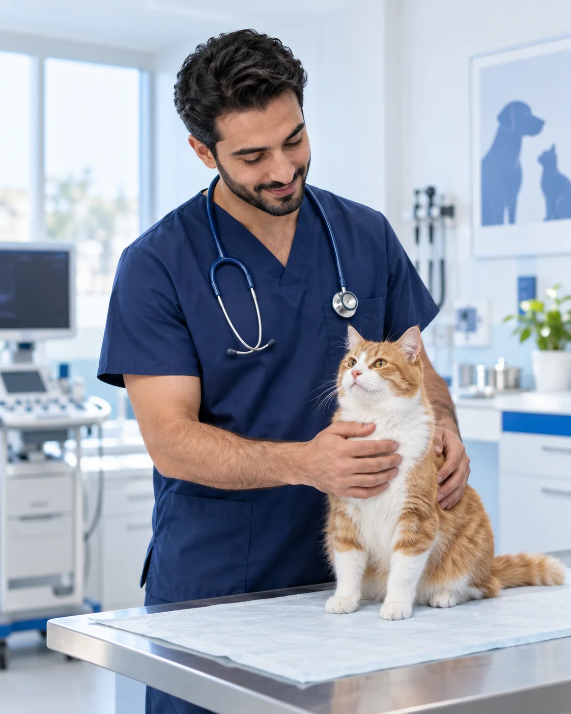
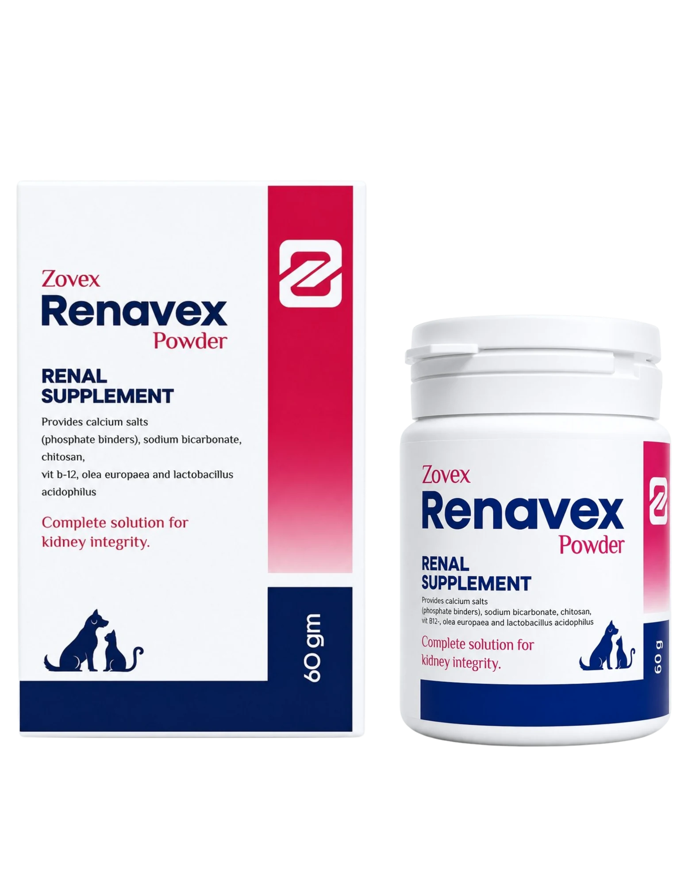
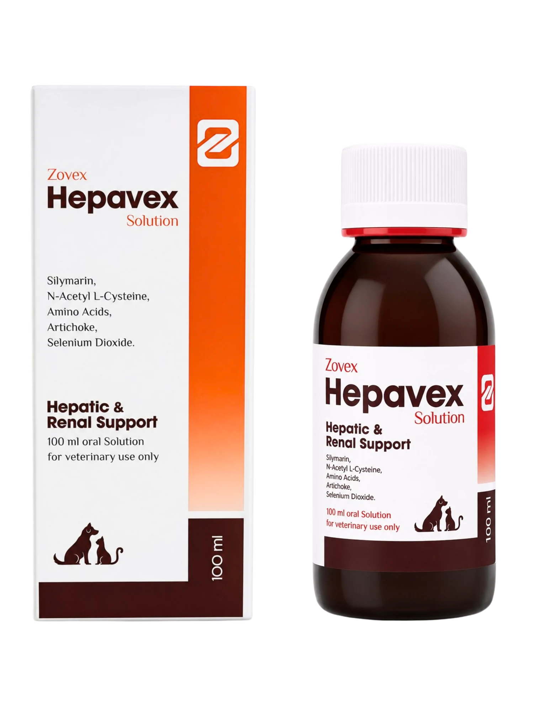

Trust
معلومة واضحة وهوية تبني الثقة.
حلول داعمة مصممة بعناية لتخدم الأطباء البيطريين ومقدمي الرعاية، بهوية تجمع بين الجودة والتقدم والاهتمام الحقيقي بصحة الحيوان.

Driven by Innovation
Defined by Quality.
تعمل Zovex على تقديم حلول بيطرية تواكب احتياجات الرعاية الحديثة، مع اهتمام بجودة المنتج ووضوح المعلومة وبناء علاقة مهنية قوية مع الأطباء ومقدمي الرعاية.
معلومة واضحة وهوية تبني الثقة.
حلول ترتكز على المعرفة البيطرية.
تطوير مستمر لرحلة رعاية أفضل.
تعرف على المنتجات ومكوناتها الأساسية. الاستخدام والجرعات يحددهما الطبيب البيطري وفقًا لحالة الحيوان.
مكمل بيطري داعم لصحة الكلى، في عبوة مسحوق 60 جم.

محلول فموي بيطري لدعم وظائف الكبد والكلى، بحجم 100 مل.

المنتجات للاستخدام البيطري فقط. المعلومات المعروضة تعريفية ولا تُغني عن تشخيص أو توجيه الطبيب البيطري.
مبادرة للتوعية بصحة الكلى لدى الحيوانات الأليفة، وتشجيع الفحص المبكر عبر شبكة من العيادات البيطرية المشاركة.
تابع تفاصيل المبادرةالتعرف على الحالات الأكثر احتياجًا للمتابعة.
الانتباه لأي تغيرات ومناقشتها مع الطبيب.
فحوص تشخيصية لدى العيادات المشاركة بالمبادرة.
خطة رعاية يحددها الطبيب حسب كل حالة.